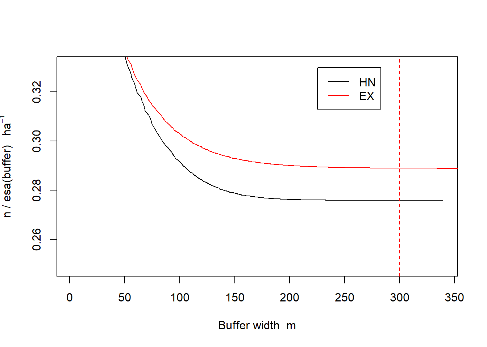
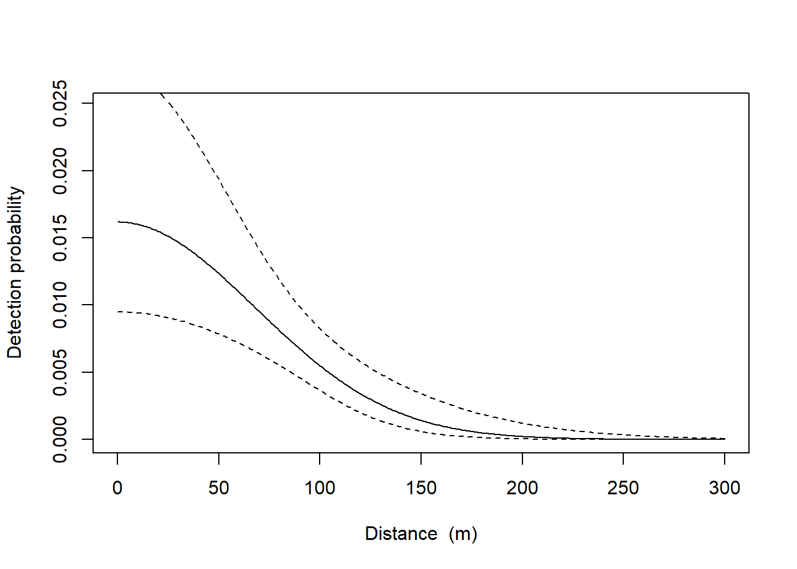

library(purrr)
packages <- c("secr", "here", "sf", "ggplot2", "dplyr")
walk(packages, require, character.only = T)
here::here()Julia Creek Dunnart Density Analysis
Project Description
The Julia Creek Dunnart (Sminthopsis douglasi) is an endangered small mammal found in central west Queensland, Australia. This project aims to provide the first population density and population size estimates for S. douglasi within a national park. Density and population size are estimated via spatially explicit capture-recapture, using live capture data collected over seven trapping sessions between 2022 and 2023.
Further details of the project methods, results, and discussion are presented in our paper entitled: “Density of a cryptic Australian small mammal: the threatened Julia Creek Dunnart (Sminthopsis douglasi)” Ecology and Evolution. A. H. Bakker, Patterson C.R., Mifsud G., Reside A., Fuller S., and Baker A.M.
Load required packages
Load the data
Load the capture file and the trap file. View these. Each session is a unique trapping period at one of the two sites (Scrammy, Campbells). Each row is a unique capture event. The ID for individual animals is in the column “ID”. The column “occasion” is the trap night for that session. The Detector is the unique ID for each trap.
CH_zero <- read.capthist("Data/captfile_zeros.txt", "Data/trapfile.txt", detector = "multi")Session campbellsfive
No live releases
Session campbellsfour
No live releases
Session campbellsthree
No live releasesCH <- read.capthist("Data/captfile.txt", "Data/trapfile.txt", detector = "multi")No errors found :-)# Set order to make sure session-specific trap layouts match with sessions order at the two field sites (ordered by session name)
CH_zero <- read.capthist("Data/captfile_zeros.txt", c("Data/trapfile_campbells_MGA2020.txt", "Data/trapfile_campbells_MGA2020.txt", "Data/trapfile_campbells_MGA2020.txt", "Data/trapfile_campbells_MGA2020.txt", "Data/trapfile_campbells_MGA2020.txt", "Data/trapfile_campbells_MGA2020.txt", "Data/trapfile_scrammy_MGA2020.txt", "Data/trapfile_scrammy_MGA2020.txt", "Data/trapfile_scrammy_MGA2020.txt", "Data/trapfile_scrammy_MGA2020.txt", "Data/trapfile_scrammy_MGA2020.txt", "Data/trapfile_scrammy_MGA2020.txt"),
detector = "multi")Session campbellsfive
No live releases
Session campbellsfour
No live releases
Session campbellsthree
No live releasesCH_zero <- read.capthist("Data/captfile.txt", c("Data/trapfile_campbells_MGA2020.txt", "Data/trapfile_campbells_MGA2020.txt", "Data/trapfile_campbells_MGA2020.txt", "Data/trapfile_scrammy_MGA2020.txt", "Data/trapfile_scrammy_MGA2020.txt", "Data/trapfile_scrammy_MGA2020.txt", "Data/trapfile_scrammy_MGA2020.txt", "Data/trapfile_scrammy_MGA2020.txt", "Data/trapfile_scrammy_MGA2020.txt"),
detector = "multi")No errors found :-)summary(CH, terse = T) campbellsseven campbellssix campbellstwo scrammyfive scrammyfour
Occasions 7 7 6 7 4
Detections 9 15 3 4 2
Animals 6 9 3 4 1
Detectors 200 200 200 200 200
scrammyseven scrammysix scrammythree scrammytwo
Occasions 7 7 7 2
Detections 8 28 12 2
Animals 5 19 9 2
Detectors 200 200 200 200# Or view full summary output
# summary(CH)Plot recaptures
par(mar = c(0,0,0,0))
plot(CH_zero, tracks = TRUE)Warning in plot.capthist(CH_zero, tracks = TRUE): screen layout does not allow
for all sessions and some plots may be lost; set par mfrow


campbellsseven campbellssix campbellstwo scrammyfive scrammyfour
9 15 3 4 2
scrammyseven scrammysix scrammythree scrammytwo
8 28 12 2 View successive trap-revealed movement distances, summarise with the median and a histogram. Observing that most individuals were showing movements > 50 m (our trap spacing) suggests that even individuals with home range centres outside of the trapping grid would have had the opportunity to be caught (Efford, 2022).
m <- unlist(moves(CH_zero))
mcampbellsseven.21 campbellsseven.22 campbellsseven.4 campbellssix.11
261.83551 49.15844 203.51493 51.38980
campbellssix.12 campbellssix.2 campbellssix.3 campbellssix.6
67.85502 50.67253 49.98391 66.75001
campbellssix.7 scrammyfour.1 scrammyseven.21 scrammyseven.22
49.96525 61.19083 178.07939 168.17787
scrammyseven.23 scrammysix.31 scrammysix.32 scrammysix.5
156.93552 0.00000 0.00000 98.40969
scrammysix.6 scrammysix.7 scrammysix.81 scrammysix.82
320.85100 106.18599 101.69885 68.56398
scrammysix.111 scrammysix.112 scrammythree.21 scrammythree.22
47.38029 47.38029 51.40011 51.40011
scrammythree.4
61.06169 median(m)[1] 61.19083par(mar = c(5,4,4,2), mgp = c(3,1,0)) # reduce margins
hist(m, breaks = seq(0, 550,30), xlab = "Movement (m)", main = "")
Choosing detection function
We must check the effect of different detection function shapes. We do this by fitting models with the half-normal and exponential functions and comparing the estimated densities. We set the autoini = 6 to set our starting parameter values from a session with capture data. The default for a multi-session analysis is to take starting parameter values from the first session which doesn’t work when the session has no captures.
We also compare model fit via AICc (Akaike’s Information Criterion).
#The half-normal
fit.HN <- secr.fit(CH_zero,
detectfn = 'HN',
buffer = 300,
details = list(autoini = 6),
trace = F)
#Now the exponential
fit.EX <- secr.fit (CH_zero,
detectfn = 'EX',
buffer = 300,
details = list(autoini = 6),
trace = FALSE,)
#Combine into an object of class secrlist
fits <- secrlist(HN = fit.HN, EX = fit.EX)
# Look at the density values, g0 and sigma, plus SEs
predict(fits)$HN
$HN$`session = campbellsseven`
link estimate SE.estimate lcl ucl
D log 0.33202500 0.064300035 0.227951195 0.48361494
g0 logit 0.01618156 0.004387746 0.009492003 0.02745496
sigma log 68.01014395 8.308833941 53.575581980 86.33372721
$HN$`session = campbellssix`
link estimate SE.estimate lcl ucl
D log 0.33202500 0.064300035 0.227951195 0.48361494
g0 logit 0.01618156 0.004387746 0.009492003 0.02745496
sigma log 68.01014395 8.308833941 53.575581980 86.33372721
$HN$`session = campbellstwo`
link estimate SE.estimate lcl ucl
D log 0.33202500 0.064300035 0.227951195 0.48361494
g0 logit 0.01618156 0.004387746 0.009492003 0.02745496
sigma log 68.01014395 8.308833941 53.575581980 86.33372721
$HN$`session = scrammyfive`
link estimate SE.estimate lcl ucl
D log 0.33202500 0.064300035 0.227951195 0.48361494
g0 logit 0.01618156 0.004387746 0.009492003 0.02745496
sigma log 68.01014395 8.308833941 53.575581980 86.33372721
$HN$`session = scrammyfour`
link estimate SE.estimate lcl ucl
D log 0.33202500 0.064300035 0.227951195 0.48361494
g0 logit 0.01618156 0.004387746 0.009492003 0.02745496
sigma log 68.01014395 8.308833941 53.575581980 86.33372721
$HN$`session = scrammyseven`
link estimate SE.estimate lcl ucl
D log 0.33202500 0.064300035 0.227951195 0.48361494
g0 logit 0.01618156 0.004387746 0.009492003 0.02745496
sigma log 68.01014395 8.308833941 53.575581980 86.33372721
$HN$`session = scrammysix`
link estimate SE.estimate lcl ucl
D log 0.33202500 0.064300035 0.227951195 0.48361494
g0 logit 0.01618156 0.004387746 0.009492003 0.02745496
sigma log 68.01014395 8.308833941 53.575581980 86.33372721
$HN$`session = scrammythree`
link estimate SE.estimate lcl ucl
D log 0.33202500 0.064300035 0.227951195 0.48361494
g0 logit 0.01618156 0.004387746 0.009492003 0.02745496
sigma log 68.01014395 8.308833941 53.575581980 86.33372721
$HN$`session = scrammytwo`
link estimate SE.estimate lcl ucl
D log 0.33202500 0.064300035 0.227951195 0.48361494
g0 logit 0.01618156 0.004387746 0.009492003 0.02745496
sigma log 68.01014395 8.308833941 53.575581980 86.33372721
$EX
$EX$`session = campbellsseven`
link estimate SE.estimate lcl ucl
D log 0.34777427 0.06755423 0.23849671 0.50712205
g0 logit 0.05377493 0.01705575 0.02861917 0.09879332
sigma log 36.44931760 5.64299936 26.95801436 49.28229268
$EX$`session = campbellssix`
link estimate SE.estimate lcl ucl
D log 0.34777427 0.06755423 0.23849671 0.50712205
g0 logit 0.05377493 0.01705575 0.02861917 0.09879332
sigma log 36.44931760 5.64299936 26.95801436 49.28229268
$EX$`session = campbellstwo`
link estimate SE.estimate lcl ucl
D log 0.34777427 0.06755423 0.23849671 0.50712205
g0 logit 0.05377493 0.01705575 0.02861917 0.09879332
sigma log 36.44931760 5.64299936 26.95801436 49.28229268
$EX$`session = scrammyfive`
link estimate SE.estimate lcl ucl
D log 0.34777427 0.06755423 0.23849671 0.50712205
g0 logit 0.05377493 0.01705575 0.02861917 0.09879332
sigma log 36.44931760 5.64299936 26.95801436 49.28229268
$EX$`session = scrammyfour`
link estimate SE.estimate lcl ucl
D log 0.34777427 0.06755423 0.23849671 0.50712205
g0 logit 0.05377493 0.01705575 0.02861917 0.09879332
sigma log 36.44931760 5.64299936 26.95801436 49.28229268
$EX$`session = scrammyseven`
link estimate SE.estimate lcl ucl
D log 0.34777427 0.06755423 0.23849671 0.50712205
g0 logit 0.05377493 0.01705575 0.02861917 0.09879332
sigma log 36.44931760 5.64299936 26.95801436 49.28229268
$EX$`session = scrammysix`
link estimate SE.estimate lcl ucl
D log 0.34777427 0.06755423 0.23849671 0.50712205
g0 logit 0.05377493 0.01705575 0.02861917 0.09879332
sigma log 36.44931760 5.64299936 26.95801436 49.28229268
$EX$`session = scrammythree`
link estimate SE.estimate lcl ucl
D log 0.34777427 0.06755423 0.23849671 0.50712205
g0 logit 0.05377493 0.01705575 0.02861917 0.09879332
sigma log 36.44931760 5.64299936 26.95801436 49.28229268
$EX$`session = scrammytwo`
link estimate SE.estimate lcl ucl
D log 0.34777427 0.06755423 0.23849671 0.50712205
g0 logit 0.05377493 0.01705575 0.02861917 0.09879332
sigma log 36.44931760 5.64299936 26.95801436 49.28229268The density estimates are similar. The difference is in the detection parameters g0 and sigma.
Apply AICc.
AIC(fits,criterion = 'AICc') model detectfn npar logLik AIC AICc dAICc AICcwt
EX D~1 g0~1 sigma~1 exponential 3 -478.8920 963.784 964.228 0.000 0.9853
HN D~1 g0~1 sigma~1 halfnormal 3 -483.0948 972.190 972.634 8.406 0.0147The most-supported model is the exponential, with an AICc weight of 0.99 and a ΔAICc from the exponential to the half-normal of 8.4.
esa.plot(fits)
abline(v = 300, lty = 2, col = 'red')
Choosing Buffer Width (option without mask)
Now we print an initial estimate of sigma (a measure of home range shape - how much the probability of capture declines with distance from a trap). We x this by 4 to get a quick estimate of potential buffer widths. This differs across sessions a bit so we might choose to think about using the maximum (~300).
initialsigma <- RPSV(CH_zero, CC = TRUE)
print(initialsigma)$campbellsseven
[1] 108.4343
$campbellssix
[1] 27.85704
$campbellstwo
[1] NaN
$scrammyfive
[1] NaN
$scrammyfour
[1] 30.59558
$scrammyseven
[1] 72.99183
$scrammysix
[1] 62.23358
$scrammythree
[1] 24.58182
$scrammytwo
[1] NaNlapply(initialsigma, FUN = function(x) print(x*4))[1] 433.7371
[1] 111.4282
[1] NaN
[1] NaN
[1] 122.3823
[1] 291.9673
[1] 248.9343
[1] 98.32728
[1] NaN$campbellsseven
[1] 433.7371
$campbellssix
[1] 111.4282
$campbellstwo
[1] NaN
$scrammyfive
[1] NaN
$scrammyfour
[1] 122.3823
$scrammyseven
[1] 291.9673
$scrammysix
[1] 248.9343
$scrammythree
[1] 98.32728
$scrammytwo
[1] NaNThe fitted detection function and esa.plot indicate that a 300 m buffer width is sufficient to encompass all individuals with any non-negligible probability of being captured. The estimated density reaches a plateau before 300m.
Plotting alternate model fits
plot(fit.EX, limits = T, xval = 0:300)
plot(fit.HN, limits = T, xval = 0:300)
Population size estimate
# Load habitat layer
habitat_layer <- read_sf("Data/AOI_DISSOLVED.shp")
# Transform so it has the same projection as the trap file
habitat_layer <- st_transform(habitat_layer, crs = 7855)# Area of the region is about 5,725 ha
region.N(fit.EX,
region = habitat_layer
)$campbellsseven
estimate SE.estimate lcl ucl n
E.N 1998.150 388.1353 1370.292 2913.689 6
R.N 1996.927 385.5527 1372.881 2905.878 6
$campbellssix
estimate SE.estimate lcl ucl n
E.N 1998.150 388.1353 1370.292 2913.689 9
R.N 1999.927 385.5527 1375.881 2908.878 9
$campbellstwo
estimate SE.estimate lcl ucl n
E.N 1998.150 388.1353 1370.292 2913.689 3
R.N 1994.617 385.5527 1370.530 2903.512 3
$scrammyfive
estimate SE.estimate lcl ucl n
E.N 1997.547 388.0183 1369.878 2912.810 4
R.N 1994.213 385.4356 1370.364 2902.898 4
$scrammyfour
estimate SE.estimate lcl ucl n
E.N 1997.547 388.0183 1369.878 2912.810 1
R.N 1993.620 385.4356 1369.626 2902.109 1
$scrammyseven
estimate SE.estimate lcl ucl n
E.N 1997.547 388.0183 1369.878 2912.810 5
R.N 1995.213 385.4356 1371.364 2903.898 5
$scrammysix
estimate SE.estimate lcl ucl n
E.N 1997.547 388.0183 1369.878 2912.810 19
R.N 2009.213 385.4356 1385.364 2917.898 19
$scrammythree
estimate SE.estimate lcl ucl n
E.N 1997.547 388.0183 1369.878 2912.810 9
R.N 1999.213 385.4356 1375.364 2907.898 9
$scrammytwo
estimate SE.estimate lcl ucl n
E.N 1997.547 388.0183 1369.878 2912.810 2
R.N 1996.776 385.4356 1372.653 2905.091 2